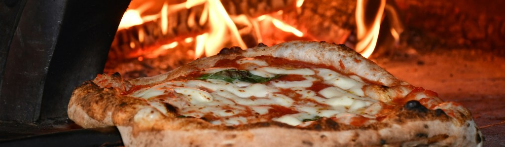

Wie ben ik?
Sinds enkele jaren ben ik getrouwd met mijn fantastische vrouw, ons huwelijk is bezegeld met twee geweldige kinderen die het absolute middelpunt van ons leven vormen. Bijna al onze vrije tijd gaat naar hen: samen buiten spelen, avonturen beleven in de tuin, eindeloos Lego bouwen en gezellig bakken en koken. Het is een periode vol energie, creativiteit en onvoorwaardelijke liefde. Niets is bevredigender dan te zien hoe hun wereld elke dag een stukje groter wordt en hoe wij als ouders daarin een rol mogen spelen.
Wanneer de avond valt en de rust weerkeert in huize Buys, is het vaak tijd voor een moment voor mezelf. Dan zet ik weleens de PC aan voor een potje strategische games zoals Age of Empires 2 of de Total War-franchise. Deze games zijn meer dan alleen ontspanning; ze scherpen mijn vermogen aan om vooruit te denken, snel te anticiperen en beslissingen te nemen onder druk. Het zijn vaardigheden die ik de volgende dag vaak onbewust toepas op de werkvloer: analytisch denken, teamwork en het belang van een doordachte strategie. Ook het sociale aspect van gaming - het samenwerken met of concurreren tegen anderen - vind ik waardevol. Het leert me om flexibel te zijn, te luisteren en mijn aanpak aan te passen aan nieuwe uitdagingen.
Een andere passie die ik deel met vrienden is het spelen van gezelschapsspellen. Titels als Santorini, Whitechapel, Saboteur en Sherlock Holmes - Consulting Detective komen regelmatig op tafel. Wat deze spellen zo boeiend maakt, is dat geluk zelden de doorslag geeft. Het draait om logica, mensenkennis en het vermogen om patronen te herkennen. Het zijn eigenschappen die ik ook in mijn professionele leven waardeer: het vermogen om situaties te lezen, samen te werken en creatieve oplossingen te bedenken.
Op rustige avonden vind je me vaak in de zetel met een goed boek. Fantasyreeksen zoals The Wheel of Time van Robert Jordan of historische thrillers zoals de Vespasianus-serie van Robert Fabbri nemen me mee naar andere werelden en tijdperken. Ik ben een herlezer: goede boeken verdienen het om meerdere keren ontdekt te worden, alsof je elke keer nieuwe lagen ontdekt. Het is een manier om tot rust te komen, maar ook om geïnspireerd te raken door verhalen over leiderschap, doorzettingsvermogen en avontuur.
Italië: een liefde voor pizza, limoncello en la dolce vita
Mijn fascinatie voor Italië gaat veel verder dan alleen de keuken, hoewel die zeker een belangrijke rol speelt. Tijdens de vakanties in mijn jeugd en onze huwelijksreis ontdekten we de schoonheid van het land: de levendige steden, de rustige dorpen, de rijke geschiedenis en natuurlijk, het eten. Pizza is voor mij meer dan voedsel; het is een ambacht. Ik ben gefascineerd door de kunst van het maken van de perfecte napolitaanse pizza: het deeg dat dagen rijst, de juiste verhouding tussen tomatensaus en mozzarella, en de magische transformatie in een houtoven. Ik experimenteer graag met verschillende bloemsoorten, gistmethodes en baktechnieken. Mijn doel? Een pizza die doet denken aan die ene onvergetelijke bite in Napels, waar de korst knapperig en luchtig is en de smaken in perfecte harmonie zijn. Mijn droom is om over een jaar, als ik mijn 40ste verjaardag vier, een eigen pizzaoven te hebben. Dan kan ik mijn vaardigheden naar een hoger niveau tillen en vrienden en familie trakteren op verse, ambachtelijke pizza's. Let wel: ananas hoort daar niet op - dat is een heilige regel in huis!
Naast pizza ben ik ook gepassioneerd door het brouwen van limoncello. Het proces - van het schillen van biologische citroenen tot het geduldig laten trekken van de alcohol - is bijna meditatief. Het resultaat, een zoete, frisse likeur, is de perfecte afsluiting van een maaltijd en een mooie herinnering aan de zonnige kust van Zuid-Italië. Het zelf maken van limoncello is voor mij een metier: het vraagt geduld, precisie en een gevoel voor balans. Eigenschappen die ik ook in mijn werk toepas, of het nu gaat om projectplanning of het begeleiden van een team.
Vietnam en Cambodja: een culinaire en culturele ontdekking

Een maand reizen door Vietnam en Cambodja heeft een onuitwisbare indruk op me achtergelaten. De drukke straten van Hanoi, de serene landschappen van Halong Bay, en de indrukwekkende tempels van Angkor Wat: het was een reis die ons als koppel verrijkte. Maar wat vooral bijbleef, was de keuken. De frisse, kruidige smaken van de Vietnamese keuken - van pho en banh mi tot verse springrolls - zijn sindsdien regelmatig terug te vinden in onze keuken. Samen met mijn vrouw proberen we gerechten na te maken die we onderweg hebben geproefd. Het is een leuke uitdaging om de juiste ingrediënten te vinden en de technieken onder de knie te krijgen. Koken is voor ons een manier om herinneringen levend te houden en nieuwe smaakcombinaties te ontdekken.
Actief
Op actievere dagen vind je me op het padelveld, waar ik geniet van de combinatie van sport en gezelligheid. Padel is een spel dat draait om reflexen, tactiek en samenwerking - weer een mooie parallel met mijn werk. En als ik even alleen ben, trek ik er graag op uit voor een wandeling door de Kempense velden. De natuur helpt me om mijn gedachten te ordenen en nieuwe energie op te doen.
Wat neem ik mee in mijn werk?
Mijn passies leren me elke dag iets nieuws: of het nu gaat om geduld (bij het rijzen van deeg), strategisch denken (bij games en spellen), of het belang van samenwerking (in de keuken, op het padelveld of in een team). Ik geloof dat deze ervaringen me een brede kijk geven op uitdagingen en kansen. Ik ben iemand die graag leert, experimenteert en anderen inspireert om het beste uit zichzelf te halen. Of het nu gaat om een complex project, een culinair avontuur of een gezellig avondje met vrienden: ik pak dingen graag met enthousiasme en toewijding aan.
| Vaardigheid | Voorbeeld |
|---|---|
| Aanpassingsvermogen | Nieuwe recepten uitproberen, flexibel zijn in spellen en games |
| Analytisch vermogen | Complexe spellen, boeken analyseren, recepten en processen optimaliseren |
| Attent voor detail | Pizza bakken, limoncello brouwen, strategische games |
| Communicatie | Samenwerken met vrienden en familie, uitleggen van spelregels |
| Creativiteit | Lego bouwen met kinderen, pizza en limoncello maken, koken |
| Culturele nieuwsgierigheid | Reizen, internationale keukens ontdekken, nieuwe smaken en technieken leren |
| Doorzettingsvermogen | Boekenreeksen uitlezen, culinaire technieken perfectioneren |
| Geduld en precisie | Pizza deeg laten rijzen, limoncello brouwen, boeken herlezen |
| Leiderschap | Begeleiden van spelavonden, kinderen stimuleren in creativiteit |
| Leren en experimenteren | Nieuwe kooktechnieken, gaming-strategieën, recepten aanpassen |
| Probleemoplossend vermogen | Gezelschapsspellen, kookexperimenten, gaming-strategieën |
| Projectmanagement | Organiseren van familieactiviteiten, plannen van kooksessies |
| Samenwerken | Gezelschapsspellen, padel, koken met mijn vrouw |
| Strategisch denken | RTS-games, gezelschapsspellen, planning en vooruitdenken |
| Teamwork | Gezelschapsspellen, padel, koken met mijn vrouw, online gaming |
| Tijdsmanagement | Balans vinden tussen gezin, hobbys en ontspanning |